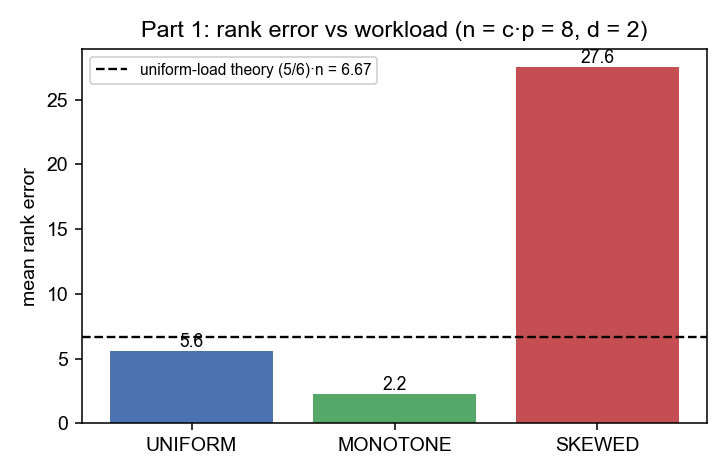
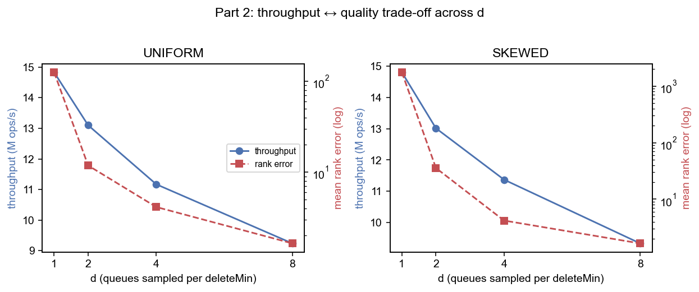
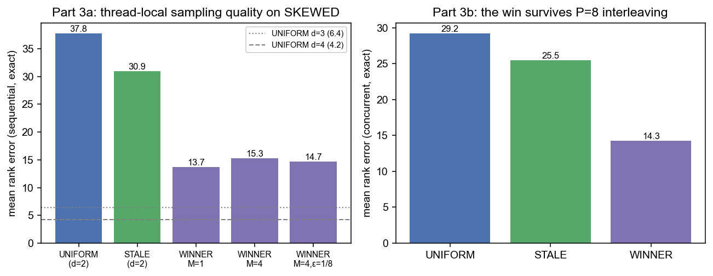
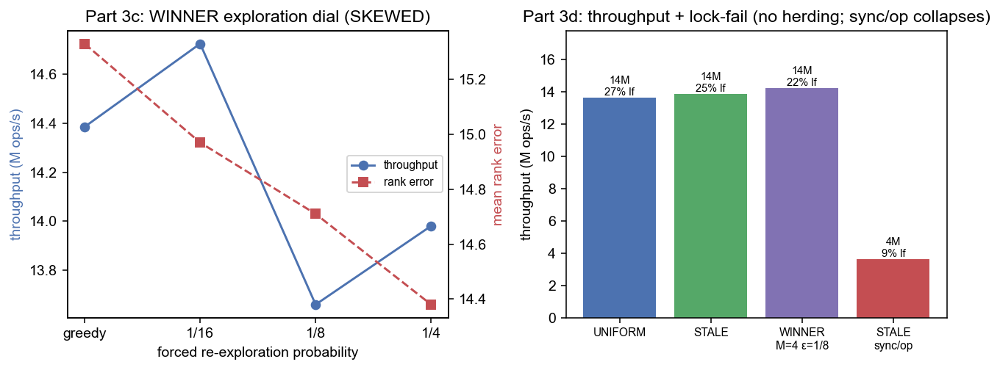
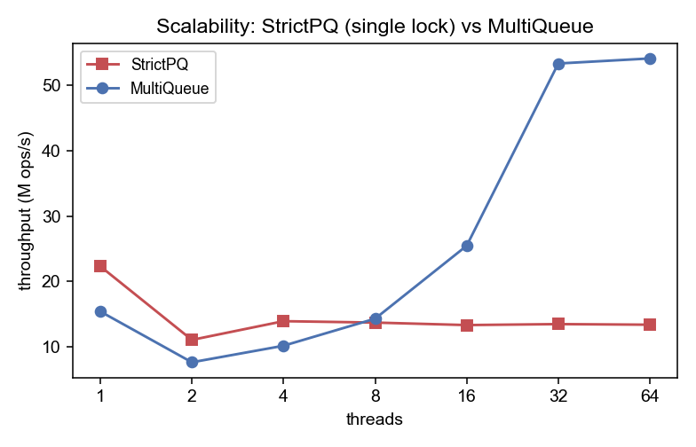

Multicore Programming — Final Project. Topic: weakening the concurrent priority queue (MultiQueue).
Abstract. A concurrent priority queue has a contention bottleneck at deleteMin: every thread wants the single smallest element, so the operation that returns it has to be serialized. The MultiQueue gets around this by relaxing correctness. It keeps c·p internal queues, inserts into a random one, and lets deleteMin return the smaller minimum of only d randomly sampled queues. Its quality guarantee, an expected rank error of (5/6)·n − 1 + 1/(6n) at d=2, assumes the load is uniformly random. I summarize the three papers that build this structure and then carry out the three-part project I had approved. (1) Problem: under a non-uniform placement workload the measured rank error is about 4× the bound (27.6 vs 6.67 at n=8). (2) Variation: sweeping d makes rank error fall sharply (from 1756 at d=1 to 1.7 at d=8), while throughput drops about 28% over the useful d=2–8 range. (3) Improvement: the idea I chose to start from (bias toward the least-recently-sampled queue) helps only about 18%, so after investigating I improved it into remember-the-winner, a thread-local bias toward recently winning queues that cuts SKEWED rank error by about 60% with no shared writes and no herding. Every number here comes from real runs of my Java 8 code, with sequential rank error measured exactly so it matches the setting the analyses use.
A strict concurrent priority queue always returns the true minimum. Because every thread contends for that one element, the operation serializes and throughput stops scaling; my StrictPQ baseline (one heap, one lock) shows exactly this in §4.4. All three papers I summarize attack the problem the same way: relax the semantics and return an element that is only approximately minimal, and get parallelism in return.
The shared design is the MultiQueue. It keeps n = c·p internal sequential heaps (c a small queue-factor, p the thread count), each with its own lock. insert picks a uniform-random queue, and deleteMin samples d queues (the “power of d choices”, default d=2) and removes the smaller of their cached minima. Locks are taken with tryLock and a contended queue is just resampled, so a thread never blocks; the structure is lock-based but behaves as wait-free in practice, rather than truly lock-free. Quality is measured by rank error, the number of elements currently in the queue that are smaller than the one returned. My project asks what happens to that quality once the load stops being uniform.
This is the paper that introduces the MultiQueue. The idea is to take c·p ordinary sequential priority queues, guard each one with a lock, send every insert to a uniform-random queue, and do deleteMin by picking two queues at random and deleting from whichever has the smaller minimum. That last step is the “power of two choices” from randomized load balancing. The authors argue that this design is simple and hardware-independent, gives good throughput and good (empirical) quality, and scales much better than a single-lock queue. The other two papers both build on it.
This paper makes the MultiQueue fast and pins down what its quality actually means. It generalizes sampling to d ≥ 2 choices, adds insertion and deletion buffers so the heap work is amortized, and defines the rank error and delay metrics, along with a simplified expected rank error of about c·p/d − 1. It also adds stickiness: a thread reuses the same queue (or set of queues) for several operations in a row to get better cache locality. The paper is careful to note this is a trade-off, and that stickiness actually raises rank error and delay.
This paper works out the MultiQueue’s rank error exactly in the long run. For d=2 it proves the expected value is (5/6)·n − 1 + 1/(6n) with n=c·p, and it sets up a more general σ-MultiQueue where the deletion rule can pick a queue with a probability that depends on its rank. The proof needs a few assumptions to hold: uniform-random insert placement, independent uniform sampling at deleteMin, a random initial partition, and a deletion-only steady state. The authors themselves point out that the method “is not directly applicable when insertions of arbitrary elements can happen after deletions.”
So the three papers are really the same structure at three stages: the original design [1], the engineering work that adds quality metrics and heuristics like stickiness [2], and the exact analysis of the quality [3]. What I care about is that all of the quality analysis assumes a uniformly random load. None of the three looks at what happens when the small elements pile up in a few queues, and that is the case my project looks at.
I wrote the MultiQueue and the whole test harness in pure Java 8 (one directory, no packages, main class MppRunner, no JVM flags) so it builds and runs unchanged on the college server. Each internal queue is a long-based binary min-heap behind a ReentrantLock, with a volatile cached minimum and some manual padding to avoid false sharing. The strict baseline is just one such heap behind one lock. All the randomness comes from ThreadLocalRandom.
Rank error is ordinal: it counts how many elements currently in the queue are smaller than the one I returned, no matter what the actual key values are. That means it depends on how the small elements are spread across the queues, which is what drove my choice of workloads. I use three. UNIFORM has i.i.d. keys and uniform placement, which is the regime the analysis assumes. MONOTONE is Dijkstra-like: each insert is just above the producer’s last deletion, so it stresses key order only while placement stays uniform. SKEWED routes the small keys to a small “hot” subset of queues, which models urgent work coming from a few sources. Quality is measured with a single-threaded driver, since the analyses are stated for sequential execution of the operations [3]. The driver runs the real MultiQueue and mirrors its contents in a Fenwick tree, so every deleteMin’s rank error is exact; I average over seven repetitions. To make sure the result is not just a sequential artefact, I also measure exact rank error with p threads issuing operations in interleaved order, applying each one under an audit monitor so the count stays exact while the per-thread memory and the shared queue still interact. Throughput is a separate experiment: all p threads on a 50/50 insert/deleteMin mix, with warmup, best-of-repeats, and a checksum so the JIT cannot delete the work as dead code.
The project has the three parts I had approved: a problem the papers do not analyze, a variation of the sampling width, and an improvement to the sampling rule.
I ran the exact sequential rank-error driver on all three workloads at n = c·p = 8, d=2, and compared the mean against the uniform-load prediction (5/6)·8 = 6.67.
| Workload | mean | p99 | max | vs theory 6.67 |
|---|---|---|---|---|
| UNIFORM | 5.62 | 47 | 157 | 0.84× |
| MONOTONE | 2.25 | 66 | 404 | 0.34× |
| SKEWED | 27.56 | 584 | 883 | 4.13× |
Table 1. Rank error by workload (n=8, d=2). UNIFORM tracks the theory; SKEWED is far above it.

UNIFORM matches the closed form, which is really a check that my measurement is right. MONOTONE turns out to be harmless (2.2, even below theory): changing only the key values while keeping placement uniform does not hurt, because rank error is ordinal. The one that breaks the guarantee is SKEWED, i.e. non-uniform placement. In other words the MultiQueue depends on the placement assumption, not on key randomness by itself. This is the problem the papers do not analyze.
I swept d ∈ {1,2,4,8} at p=8, n=16, measuring both concurrent throughput and mean rank error on UNIFORM and SKEWED.
| d | UNIFORM thr (M ops/s) | UNIFORM rank | SKEWED thr (M ops/s) | SKEWED rank |
|---|---|---|---|---|
| 1 | 14.8 | 125.5 | 14.8 | 1756.5 |
| 2 | 13.1 | 11.8 | 13.0 | 35.6 |
| 4 | 11.2 | 4.1 | 11.4 | 4.2 |
| 8 | 9.2 | 1.6 | 9.3 | 1.7 |
Table 2. Throughput and mean rank error vs d (p=8, n=16). Rank error falls steeply; throughput declines.

At d=1 there is no choice at all and quality is poor, and under skew it is catastrophic (rank 1756). The biggest single gain is the first extra choice at d=2 (SKEWED 1756→36, about 49×). After that the returns diminish while throughput keeps dropping: on SKEWED, going from d=2 to d=8 improves rank from 36 to 1.7 but costs about 28% throughput. I take d=2 as the sensible default; raising it only pays off when you have a tight correctness budget and can afford to lose some throughput. That is what leads into Part 3: can I get better quality at d=2 without paying for extra samples?
The idea I chose to start from was to bias deleteMin toward the queues a thread has gone longest without sampling. My advisor approved it and added a constraint: a global per-queue tracker would just re-create the bottleneck the MultiQueue is supposed to remove, so each thread should keep its own samples and check them locally, with at most occasional synchronization. I implemented that idea as STALE, found it weak once I measured it, and then investigated further and improved it into a stronger thread-local bias called WINNER under the same constraint. I compare the two head to head. STALE replaces one of the d samples with the queue that has gone longest without being sampled (a syncPeriod setting lets its signal be local, periodic, or fully global). WINNER instead replaces one sample with a queue drawn from a small thread-local ring of recently winning queues, and evicts a remembered queue as soon as it turns out to be contended or empty.
| SKEWED, d=2 (mean rank, sequential exact) | UNIFORM | STALE | WINNER M=1 | WINNER M=4 | WINNER M=4, ε=⅛ |
|---|---|---|---|---|---|
| mean | 37.78 | 30.92 | 13.71 | 15.32 | 14.74 |
| p99 | 615 | 563 | 80 | 91 | 91 |
Table 3. WINNER cuts both the mean and the tail far more than STALE. (UNIFORM at d=3 / d=4 gives 6.4 / 4.2 — see text.) Parts 2–3 use n=16 (p=8, hot set max(1,n/8)=2), so the SKEWED baseline here (37.8) is larger than Part 1’s n=8 single-hot-queue value (27.6).

STALE only helps a little, and the reason is not hard to see: the least-recently-sampled queue has nothing to do with where the small elements are, so biasing toward it does not make a sample any more likely to land on the hot set. Its gain (38→31, about 18%) is real but small. WINNER goes at the failure mode directly. Under skew the hot queues keep getting refilled with small keys, so a queue that just won is likely to win again; remembering it raises the chance the biased probe hits the hot set, which is only max(1,n/8) queues (2 of 16 here). That gives about a 61–64% reduction in the mean (37.8→14.7 for the M=4, ε=⅛ ring, and 13.7 for a single slot) and about an 8× smaller tail (p99 615→80), which is several times better than STALE. The gain also survives interleaved p=8 execution (Fig. 3 right, 29.2→14.3). I also ran two sanity checks. Raising d to 3 beats WINNER on pure quality (6.4 vs 13.7), but it samples an extra queue on every operation, whereas WINNER gets about ¾ of that gain for free at d=2. And on UNIFORM load WINNER makes no difference, because there is no persistent hot queue to remember.
What is mine, and what is borrowed. The mechanism WINNER uses (remember a good choice and reuse it as one of the d candidates) is the power of two choices with memory [4]. That is an outside reference I cite for motivation, not one of the three MultiQueue papers I summarize. In [4] it is used for insertion load-balancing; moving it over to the deletion side as a content-aware quality bias is not in any of the three papers, and that is my contribution. WINNER is not a new primitive. It also should not be confused with the MultiQueue’s own stickiness [2], which reuses a random queue set for a fixed period to get cache locality and is documented to raise rank error. WINNER is almost the reverse of that. Its memory is keyed on which queue just won rather than on a fixed period, its whole point is to lower rank error under skew instead of trading quality for locality, and it still samples fresh uniform queues next to the one remembered winner so it never locks onto a single queue. And since a hint is only ever re-checked under the lock, no heuristic can affect correctness; a dedicated gate confirms WINNER preserves the multiset exactly.

Does it herd, and is the local design justified? The obvious worry about WINNER is that if every thread converges on the same few hot queues, they will all contend for those locks. The measurements do not show this. Run concurrently on SKEWED (p=8), WINNER’s throughput (about 14 M ops/s) is in the same range as uniform (13.6 M) and STALE (13.9 M), and its tryLock-fail rate is actually a bit lower (about 22% vs 27%), because a contended remembered queue gets evicted right away. The sharpest contrast is with a shared tracker: forcing the STALE signal to reconcile on every operation drops throughput from 14.2 to 3.6 M ops/s, about 4× (Fig. 4 right). The shared array turns into the very bottleneck the MultiQueue was built to avoid, whereas reconciling only every 64 operations keeps full throughput. So the rule I ended up following is to keep any sampling heuristic strictly thread-local; WINNER works well because it shares nothing.
I measured throughput against thread count for the strict single-lock queue and for the MultiQueue. This is the experiment that extends to all available cores, so a bigger machine fills in the higher thread counts.

The strict single-lock queue peaks at one thread (22.3M ops/s) and then flattens out under contention (about 13M ops/s from 4 to 64 threads). The MultiQueue pays a small penalty at one thread (15.4M) but scales the other way: it overtakes the strict queue by 8 threads and climbs to 54.1M ops/s at 64 threads, roughly 4× the strict queue at that point. This is the scalability the relaxation buys; Parts 1–3 are about the quality price that comes with it and how to manage that price.
The MultiQueue’s (5/6)·n rank-error guarantee is real, but it is conditional on a uniform load. It holds under uniform placement, it is unaffected by key order on its own, and it breaks by about 4× once the placement is realistically skewed. The d parameter trades throughput for quality, with a knee at d=2. For the improvement, the “revisit neglected queues” idea I started from helps only a little, because it is blind to where the content actually is. My remember-the-winner bias (the power of two choices with memory, kept strictly thread-local) instead seeks out the hot set: it cuts skewed rank error by about 61% with a roughly 7× smaller tail, holds up under p=8 interleaved operation, and does not herd, while a shared tracker destroys throughput by 4×. The way I read this is that in a relaxed concurrent data structure the cost of coordinating an improvement can end up larger than the improvement itself, which is why a purely thread-local version won here. In the terms of [3]’s rank-biased selection framework, WINNER is a thread-local, workload-adaptive bias defined by recency rather than a strict rank function, which is a small step into the workload-adaptive sampling that the analysis leaves open.